Breakthroughs in Partial Differential Equations#
“Mathematical analysis is as extensive as nature itself.” – Joseph Fourier, Théorie analytique de la chaleur, 1822
The equations of vibrating strings, heat flow, and gravitational
potential were written down in the eighteenth and early nineteenth
centuries, together with the first ideas for solving them exactly:
traveling waves and trigonometric series. Solving them numerically
came much later. The first question was how to turn derivatives into
differences at all. The next was the discovery that a perfectly
consistent difference scheme can still blow up. The last was how to
recover accuracy beyond any fixed order. This chronology traces the
ideas behind mathematicskit.pde.
1747 – d’Alembert’s Wave Equation#
Jean le Rond d’Alembert derived the equation of a vibrating string, \(u_{tt} = c^2 u_{xx}\), and showed that its general solution is a sum of two waves traveling in opposite directions at speed \(c\). For a string released from rest with displacement \(f\), the solution is simply the average of two shifted copies of \(f\). It was the first partial differential equation to be solved in general, and it started a long dispute with Euler and Daniel Bernoulli over what kinds of functions a “solution” may be.
Implementation: mathematicskit.pde.systems.wave.dalembert_solution()
evaluates this formula, on a string with fixed ends via the odd periodic
extension. WaveEquation1D
solves the same problem by finite differences with
mathematicskit.integrators.leapfrog_integrate(), which at Courant
number 1 reproduces d’Alembert’s solution exactly at the grid points.
References: J. le R. d’Alembert, “Recherches sur la courbe que forme une corde tendue mise en vibration,” Histoire de l’Académie Royale des Sciences et Belles Lettres de Berlin 3 (1747, publ. 1749), 214-219.
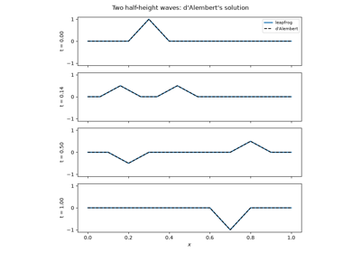
D’Alembert’s traveling waves on a plucked string
1782-1813 – Laplace’s and Poisson’s Equations#
Pierre-Simon Laplace showed that the gravitational potential outside an attracting body satisfies \(\nabla^2 u = 0\). Siméon Denis Poisson corrected the picture inside the body in 1813: there the potential satisfies \(\nabla^2 u = -4\pi G\rho\), with the mass density as a source. The same pair of equations reappeared in electrostatics, steady heat flow, and incompressible fluid flow, making them the prototype elliptic boundary-value problems.
Implementation: mathematicskit.pde.systems.poisson.solve_poisson_2d()
and solve_laplace_2d()
assemble the five-point finite-difference Laplacian
(mathematicskit.pde.utils.operators.laplacian_2d()) and solve it
with scipy.sparse.linalg.spsolve().
solve_poisson_1d() handles
the one-dimensional case.
References: S. D. Poisson, “Remarques sur une équation qui se présente dans la théorie des attractions des sphéroïdes,” Nouveau Bulletin des Sciences par la Société Philomathique de Paris 3 (1813), 388-392.
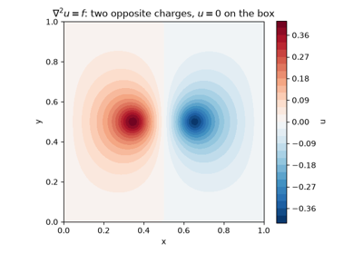
Poisson’s equation: a potential with sources
1807-1822 – Fourier’s Theory of Heat#
Joseph Fourier derived the heat equation \(u_t = \alpha u_{xx}\) in a memoir submitted in 1807 and solved it by expanding the initial temperature as a series of sines. Each sine mode then decays independently at a rate that grows with the square of its frequency. His claim that arbitrary functions have such expansions met stiff resistance from Lagrange and Laplace. It took most of the nineteenth century, and much of the modern theory of functions and integration, to make it rigorous.
Implementation: mathematicskit.pde.systems.heat.fourier_sine_coefficients()
computes the \(b_k\), and
heat_series_solution() sums the
decaying series. The test suite checks both against the
finite-difference HeatEquation1D.
References: J. Fourier, Théorie analytique de la chaleur (Paris, 1822).
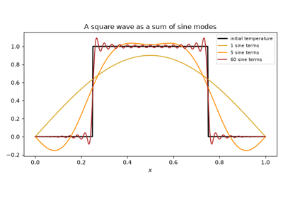
Fourier’s heat equation: a sine series whose modes decay
1911 – Richardson’s Finite Differences and Relaxation#
Lewis Fry Richardson computed the stresses in a masonry dam by replacing the governing differential equations with finite differences on a grid. He then solved the resulting algebraic equations by hand, sweeping repeatedly over the grid and updating each value from its neighbors until the changes died out. The paper introduced both the finite-difference approach to boundary-value problems and iterative relaxation. It also proposed extrapolating to zero grid spacing, now called Richardson extrapolation. David Young’s successive over-relaxation (1950) later made such sweeps dramatically faster.
Implementation: mathematicskit.pde.systems.poisson.solve_laplace_2d()
with method="jacobi", "gauss_seidel", or "sor" runs the
relaxation iterations from mathematicskit.linalg
(JacobiIteration,
GaussSeidel,
SOR) and returns their residual
histories.
References: L. F. Richardson, “The Approximate Arithmetical Solution by Finite Differences of Physical Problems Involving Differential Equations, with an Application to the Stresses in a Masonry Dam,” Philosophical Transactions of the Royal Society A 210 (1911), 307-357; D. M. Young, Iterative Methods for Solving Partial Difference Equations of Elliptic Type, PhD thesis, Harvard University (1950).
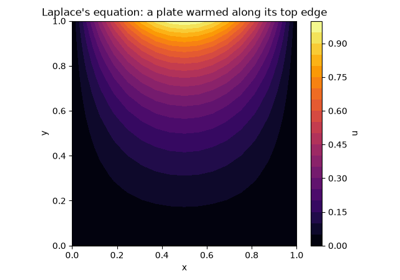
Richardson’s relaxation: iterating toward Laplace’s solution
1928 – The Courant-Friedrichs-Lewy Condition#
Richard Courant, Kurt Friedrichs, and Hans Lewy studied finite-difference approximations to hyperbolic equations as a tool for existence proofs, not computation. They found a necessary condition for convergence: the numerical domain of dependence of each grid value must contain the true one. For an explicit scheme that looks one cell to each side, a wave may travel at most one cell per time step, so the Courant number \(\nu = |c|\,\Delta t/\Delta x\) must not exceed 1. Two decades later, when electronic computers made such schemes practical, the CFL condition became the first thing to check.
Implementation: mathematicskit.pde.systems.stability.check_cfl()
and courant_number();
AdvectionEquation1D
reports the check for every solve. The leapfrog wave solver’s limit
max_stable_dt()
is the same condition.
References: R. Courant, K. Friedrichs, H. Lewy, “Über die partiellen Differenzengleichungen der mathematischen Physik,” Mathematische Annalen 100 (1928), 32-74.
1930-1960s – The Method of Lines#
Erich Rothe (1930) proved existence results for parabolic equations by discretizing time and leaving a sequence of boundary-value problems in space. The now-standard “vertical” method of lines does the opposite: it discretizes space and leaves one ordinary differential equation per grid point. Its appeal grew with ODE software. Once robust, adaptive, stiff-capable integrators existed, the spatial discretization and the time integration could be designed, and swapped, independently.
Implementation: mathematicskit.pde.core.base.MethodOfLinesPDE
hands the semi-discrete system to
mathematicskit.integrators.rk4_integrate() or
dopri5_integrate() through an @njit
right-hand side, the same path mathematicskit.ode_dynamics uses.
HeatEquation2D applies it to
a plate, and
max_stable_dt()
shows how stiffness caps RK4’s step.
References: E. Rothe, “Zweidimensionale parabolische Randwertaufgaben als Grenzfall eindimensionaler Randwertaufgaben,” Mathematische Annalen 102 (1930), 650-670; W. E. Schiesser, The Numerical Method of Lines (Academic Press, 1991).
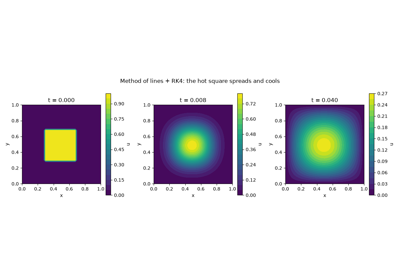
The method of lines: a hot plate as a system of ODEs
1943-1956 – The Finite Element Method#
Richard Courant suggested in 1943 approximating the solution of a variational problem by functions that are linear on each triangle of a mesh. The idea lay dormant until aircraft engineers needed to analyze swept-wing structures. Turner, Clough, Martin and Topp (1956) assembled stiffness matrices element by element, and Clough named the method in 1960. Rather than differencing the equation, the method requires its weak form to hold against every basis function, which accommodates irregular geometry and locally refined meshes. The mathematical theory (Céa’s lemma, Strang and Fix) followed in the 1960s and 1970s.
Implementation: mathematicskit.pde.systems.finite_elements.fem_poisson_1d()
assembles the piecewise-linear stiffness matrix and Gauss-Legendre load
vector on uniform or nonuniform meshes and solves with
scipy.sparse.linalg.spsolve(). The test suite checks the 1D
property that the nodal values are exact whenever the load integrals are.
References: R. Courant, “Variational Methods for the Solution of Problems of Equilibrium and Vibrations,” Bulletin of the American Mathematical Society 49 (1943), 1-23; M. J. Turner, R. W. Clough, H. C. Martin, L. J. Topp, “Stiffness and Deflection Analysis of Complex Structures,” Journal of the Aeronautical Sciences 23 (1956), 805-823.
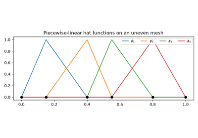
Finite elements: Galerkin’s hat functions on an uneven mesh
1947 – The Crank-Nicolson Method#
John Crank and Phyllis Nicolson needed to integrate a nonlinear heat equation for a problem in heat conduction with a chemical reaction. The explicit scheme forced impractically small time steps, and the fully implicit one was only first-order accurate. They took the average of the two, centering the scheme at the half step. The result is second-order accurate in time and stable for every step size. Its drawback is that very stiff modes are not damped: their amplification factor tends to \(-1\).
Implementation: mathematicskit.pde.systems.heat.HeatEquation1D.solve_theta()
(and its 2D counterpart) implements the whole theta-method family:
\(\theta = 0\) explicit FTCS, \(\tfrac12\) Crank-Nicolson,
\(1\) backward Euler. The implicit matrix is factored once with
scipy.sparse.linalg.splu().
References: J. Crank, P. Nicolson, “A Practical Method for Numerical Evaluation of Solutions of Partial Differential Equations of the Heat-Conduction Type,” Proceedings of the Cambridge Philosophical Society 43 (1947), 50-67.
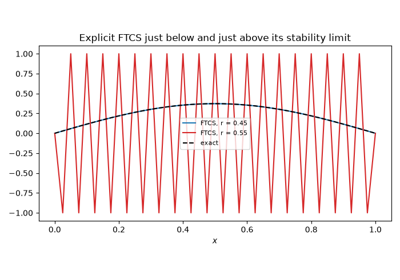
Crank-Nicolson: large, stable, second-order heat steps
1947-1951 – Von Neumann Stability Analysis#
John von Neumann developed a simple test for the stability of linear difference schemes at Los Alamos during the war. Substitute one Fourier mode \(e^{ij\xi}\) and compute the factor \(G(\xi)\) by which a step multiplies it; the scheme is stable if \(|G| \le 1\) for every \(\xi\). The method first appeared in print in Crank and Nicolson’s paper and in Charney, Fjørtoft and von Neumann’s 1950 numerical weather forecast. O’Brien, Hyman and Kaplan gave a systematic account in 1951. The Lax equivalence theorem (1956) then showed that for a consistent linear scheme, stability is exactly what convergence requires.
Implementation: mathematicskit.pde.systems.stability.amplification_factor()
gives \(G(\xi)\) for the heat and advection schemes, and
max_amplification()
maximizes it over \(\xi\). The test suite checks that the result
agrees with the CFL and diffusion-number limits.
References: J. G. Charney, R. Fjørtoft, J. von Neumann, “Numerical Integration of the Barotropic Vorticity Equation,” Tellus 2 (1950), 237-254; G. G. O’Brien, M. A. Hyman, S. Kaplan, “A Study of the Numerical Solution of Partial Differential Equations,” Journal of Mathematics and Physics 29 (1951), 223-251.
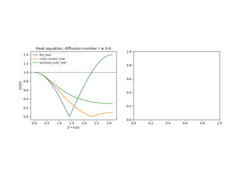
Von Neumann stability analysis: one Fourier mode at a time
1948-1951 – Burgers’ Equation and the Hopf-Cole Transformation#
Jan Burgers proposed
as the simplest model of turbulence: nonlinear advection steepens a wave toward a shock, and viscosity smooths it out again. Eberhard Hopf (1950) and Julian Cole (1951) independently found that the substitution \(u = -2\nu\,\varphi_x/\varphi\) turns it into the heat equation \(\varphi_t = \nu\,\varphi_{xx}\). The equation is therefore exactly solvable, which made it the standard test for numerical methods on nonlinear problems. As \(\nu \to 0\) its solutions converge to the entropy solutions of the inviscid equation, the model for shock-capturing schemes. For \(u_0 = \sin x\), \(\varphi_0 = e^{\cos x/(2\nu)}\) has Fourier coefficients given by the modified Bessel functions \(I_n(1/(2\nu))\).
Implementation: mathematicskit.pde.systems.spectral.burgers_cole_hopf_solution()
evaluates the transformation spectrally with numpy.fft for any
zero-mean periodic initial data.
BurgersEquation1D solves
the equation pseudo-spectrally, and the test suite checks that the two
agree to about \(10^{-12}\).
References: J. M. Burgers, “A Mathematical Model Illustrating the Theory of Turbulence,” Advances in Applied Mechanics 1 (1948), 171-199; E. Hopf, “The Partial Differential Equation \(u_t + uu_x = \mu u_{xx}\),” Communications on Pure and Applied Mathematics 3 (1950), 201-230; J. D. Cole, “On a Quasi-Linear Parabolic Equation Occurring in Aerodynamics,” Quarterly of Applied Mathematics 9 (1951), 225-236.
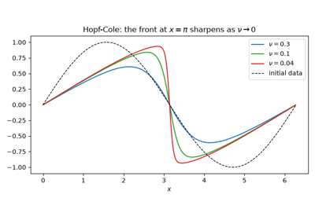
Burgers’ equation and the Hopf-Cole transformation
1952 – The Courant-Isaacson-Rees Upwind Scheme#
For \(u_t + c\,u_x = 0\) with \(c > 0\), information travels from left to right. Richard Courant, Eugene Isaacson, and Mina Rees built that into the difference: take \(u_x\) from the side the information comes from,
and from the other side when \(c < 0\). The scheme is stable for \(\nu \le 1\), exact at \(\nu = 1\), and otherwise first-order accurate. Its truncation error acts like an added diffusion \(\tfrac12 c\,\Delta x\,(1-\nu)\,u_{xx}\), which smears sharp profiles but never makes them oscillate. Differencing on the downwind side is unstable for every step size. Upwinding, extended to systems by characteristic decomposition, is the foundation of Godunov’s method and modern finite-volume schemes.
Implementation: mathematicskit.pde.systems.advection.AdvectionEquation1D
with scheme="upwind" chooses the upwind side from the sign of
\(c\). The example shows the numerical diffusion shrinking as
\(\nu \to 1\) and measures first-order convergence.
References: R. Courant, E. Isaacson, M. Rees, “On the Solution of Nonlinear Hyperbolic Differential Equations by Finite Differences,” Communications on Pure and Applied Mathematics 5 (1952), 243-255.
1954 – The Lax-Friedrichs Scheme#
The obvious centered difference for advection, forward in time and centered in space (FTCS), is unstable for every step size. Peter Lax, building on an idea of Kurt Friedrichs, replaced \(u_j^n\) in it by the average of its neighbours:
That single change makes the scheme stable for \(\nu \le 1\). It needs no knowledge of the direction of the flow, and written in conservation form it applies unchanged to nonlinear conservation laws and their shocks, which was Lax’s purpose. The price is heavy numerical diffusion, with coefficient \(\Delta x^2(1-\nu^2)/(2\Delta t)\), which grows as the time step shrinks.
Implementation: mathematicskit.pde.systems.advection.AdvectionEquation1D
with scheme="lax_friedrichs", and
mathematicskit.pde.systems.stability.max_amplification() for its
von Neumann factor. The example runs it beside FTCS, which blows up at
the same Courant number.
References: P. D. Lax, “Weak Solutions of Nonlinear Hyperbolic Equations and Their Numerical Computation,” Communications on Pure and Applied Mathematics 7 (1954), 159-193.
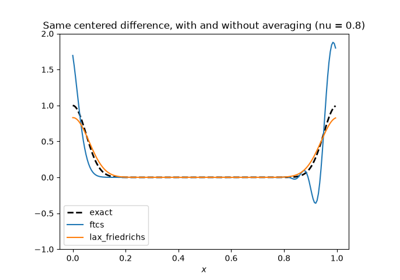
The Lax-Friedrichs scheme: stabilizing centered differences
1956 – The Lax Equivalence Theorem#
By the mid-1950s there were many difference schemes and many convergence proofs, each tailored to one scheme. Peter Lax, in work presented with Robert Richtmyer, reduced the question to two checkable properties. For a well-posed linear initial-value problem, a consistent difference scheme converges if and only if it is stable. Consistency is a Taylor-expansion exercise, and stability can be checked with von Neumann’s Fourier analysis. The theorem turned the design of convergent schemes into a routine and remains the organizing principle of the subject.
Implementation: the schemes of
mathematicskit.pde.systems.advection.AdvectionEquation1D are all
consistent, and mathematicskit.pde.systems.stability.check_cfl()
reports which are stable. The test suite and the example confirm that
exactly the stable ones converge under grid refinement.
References: P. D. Lax, R. D. Richtmyer, “Survey of the Stability of Linear Finite Difference Equations,” Communications on Pure and Applied Mathematics 9 (1956), 267-293.
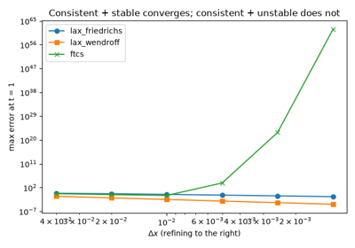
The Lax equivalence theorem: consistency + stability = convergence
1959 – Godunov’s Method for Shocks#
Nonlinear conservation laws such as gas dynamics develop shocks, where the solution jumps and the differential equation no longer holds. Sergei Godunov wrote the scheme in conservation form, so that shocks automatically travel at the Rankine-Hugoniot speed. He computed each interface flux from the exact solution of the local Riemann problem between neighboring cells. In the same paper he proved that a linear scheme that never creates new oscillations can be at most first-order accurate. That barrier explains the wiggles of second-order schemes at shocks, and it was later sidestepped by nonlinear high-resolution (limiter) methods.
Implementation: mathematicskit.pde.systems.conservation_laws.BurgersConservationLaw1D
steps inviscid Burgers’ equation with Godunov, Lax-Friedrichs, and
Lax-Wendroff fluxes;
burgers_riemann_solution()
gives the exact shock and rarefaction solutions, and
total_variation()
measures oscillation.
References: S. K. Godunov, “A Difference Method for Numerical Calculation of Discontinuous Solutions of the Equations of Hydrodynamics,” Matematicheskii Sbornik 47(89) (1959), 271-306.
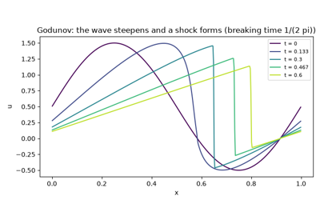
Godunov’s method: capturing shocks without oscillations
1960 – The Lax-Wendroff Scheme#
First-order schemes need very fine grids to carry a wave over long distances. Peter Lax and Burton Wendroff obtained second order by expanding \(u(t + \Delta t)\) in a Taylor series and using the PDE to replace time derivatives by space derivatives, \(u_{tt} = c^2 u_{xx}\):
The scheme is stable for \(\nu \le 1\) and keeps a smooth wave’s amplitude far better than upwind does. Its leading error is dispersive, not diffusive, so near a discontinuity it produces oscillations. Sergei Godunov proved in 1959 that every linear scheme of second or higher order must oscillate there, which led to the nonlinear flux-limited schemes of the 1970s and 1980s.
Implementation: mathematicskit.pde.systems.advection.AdvectionEquation1D
with scheme="lax_wendroff". The example compares it with upwind on
a smooth wave after ten periods and on a square wave.
References: P. D. Lax, B. Wendroff, “Systems of Conservation Laws,” Communications on Pure and Applied Mathematics 13 (1960), 217-237; S. K. Godunov, “A Difference Method for Numerical Calculation of Discontinuous Solutions of the Equations of Hydrodynamics,” Matematicheskii Sbornik 47 (1959), 271-306.
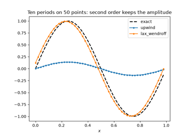
The Lax-Wendroff scheme: second order, and dispersive wiggles
1964-1977 – Multigrid Methods#
Relaxation methods remove rapidly oscillating error in a few sweeps but smooth error only very slowly, so their cost grows with the grid size. Radii Fedorenko (1964) showed that a hierarchy of coarser grids could remove the smooth part cheaply, and Nikolai Bakhvalov (1966) proved that the resulting work is proportional to the number of unknowns. Achi Brandt’s 1977 paper turned the idea into a practical, general methodology and showed that the convergence rate per cycle does not depend on the mesh size. That property makes multigrid an optimal solver for elliptic problems.
Implementation: mathematicskit.pde.systems.multigrid.multigrid_poisson_2d()
runs V-cycles with weighted-Jacobi smoothing, full-weighting restriction,
and bilinear interpolation. The test suite checks that the number of
cycles stays constant from \(17^2\) to \(129^2\) grids, and that
the solution matches the direct solve of
solve_poisson_2d().
References: R. P. Fedorenko, “The Speed of Convergence of One Iterative Process,” USSR Computational Mathematics and Mathematical Physics 4(3) (1964), 227-235; A. Brandt, “Multi-Level Adaptive Solutions to Boundary-Value Problems,” Mathematics of Computation 31 (1977), 333-390.
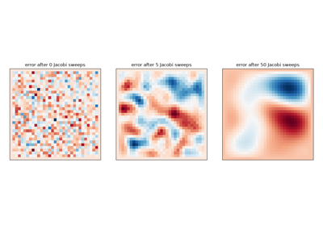
Multigrid: a solver whose cost does not grow with the grid
1969-1972 – Fourier Pseudo-Spectral Methods#
Steven Orszag, simulating turbulence, argued that on periodic domains derivatives should be taken with the fast Fourier transform. The error then falls faster than any power of the grid spacing for smooth solutions. Nonlinear products are formed pointwise on the grid, which is cheaper than working with Fourier coefficients alone and introduces only a controllable aliasing error. Kreiss and Oliger’s 1972 comparison showed how much resolution such methods save over finite differences for wave propagation.
Implementation: mathematicskit.pde.systems.spectral.fourier_derivative()
(numpy.fft) and
fourier_differentiation_matrix().
BurgersEquation1D solves
viscous Burgers’ equation pseudo-spectrally, integrated by
mathematicskit.integrators.
References: S. A. Orszag, “Numerical Methods for the Simulation of Turbulence,” Physics of Fluids 12 (1969), II-250-257; H.-O. Kreiss, J. Oliger, “Comparison of Accurate Methods for the Integration of Hyperbolic Equations,” Tellus 24 (1972), 199-215.
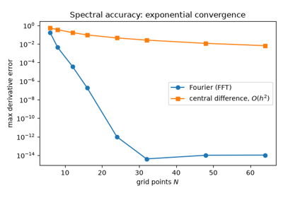
Fourier pseudo-spectral methods: Burgers’ equation
1977 – Chebyshev Collocation#
Most problems are not periodic. David Gottlieb and Steven Orszag’s monograph gave the theory of spectral methods on bounded intervals. Expand in Chebyshev polynomials, or collocate at the Chebyshev points \(x_k = -\cos(k\pi/N)\), which cluster near the boundaries exactly as needed to avoid the Runge phenomenon. For analytic data the error then decreases geometrically in \(N\), and a few dozen points can reach machine precision.
Implementation: mathematicskit.pde.systems.spectral.chebyshev_differentiation_matrix()
(on nodes from mathematicskit.numerical_analysis.chebyshev_nodes()).
chebyshev_poisson_1d() and
chebyshev_poisson_2d() solve
boundary-value problems with it.
References: D. Gottlieb, S. A. Orszag, Numerical Analysis of Spectral Methods: Theory and Applications (SIAM, 1977); L. N. Trefethen, Spectral Methods in MATLAB (SIAM, 2000).
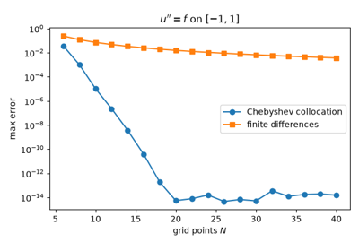
Chebyshev collocation: spectral accuracy without periodicity